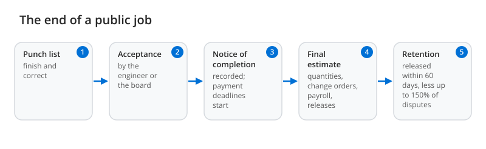

Closeout, acceptance and the end of the job
In one sentence: a public job is over when the agency accepts it and pays the final estimate and retention, and getting there is mostly paperwork you can start long before the last day of work.

The steps
- Punch list: the agency's list of items to finish or correct. Close it quickly; every week open costs overhead.
- Acceptance: the agency formally accepts the work, often by action of its governing body for local agencies, or by the engineer's written acceptance on Caltrans jobs. See Caltrans acceptance testing and the punch list.
- Notice of completion: many agencies record one with the county recorder. It starts the deadlines for stop payment notices and bond claims. See Getting paid: preliminary notices, stop payment notices and bond claims.
- Final estimate or final pay application, with all quantities agreed, change orders closed and claims either resolved or reserved in writing.
- Release of retention within 60 days after completion, less up to 150% of disputed amounts. See Progress payments and retention.
Paperwork that holds up final payment
- Certified payroll for every week, for every sub, including "no work" weeks.
- Apprenticeship records and training fund contributions.
- As-built drawings and operation and maintenance manuals. See Closeout package checklist.
- Warranties and guarantees.
- Final DBE and prompt payment reports on federal-aid jobs.
- Releases from subs and suppliers.
After closeout
Keep the job file for the record-retention period in your contract and the law. Labor compliance audits and warranty claims can arrive after the job is closed.
PM notes
Start the closeout list at 75% complete. The documents you need from subs are easiest to get while they still want their own retention.
Common mistakes / what agencies actually check
- Final pay application with change orders still unsigned.
- Missing certified payroll weeks discovered at closeout.
- Not reserving open claims in writing before signing the final estimate.